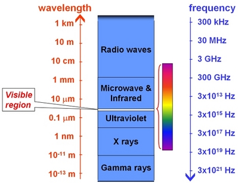

Ultraviolet (UV) light is electromagnetic radiation in the approximate wavelength range 10 to 400 nm. It has wavelengths shorter than visible light but longer than x-rays and is invisible to the human eye. The ultraviolet wavelength range is broadly divided in order of decreasing wavelength into the near ultraviolet (NUV; closest to the wavelength of visible light), the far ultraviolet (FUV) and the extreme ultraviolet (EUV; closest to the wavelength of xrays).

The Sun is a source of ultraviolet radiation which is harmful to human skin. The Earth’s ozone layer blocks the majority of the Sun’s uv-radiation, which is beneficial for us but hampers ground-based ultraviolet astronomy. Instead, ultraviolet-wavelength telescopes must be put into space on satellites. Astrophysical sources of ultraviolet light are hot objects (T ~ 106-108 K) including young, massive OB stars, evolved white dwarfs, supernova remnants, the Sun’s corona and gas in galaxy clusters.
Discovery
Ultraviolet light was discovered by Johann Wilhelm Ritter in 1801 when he noticed that invisible light beyond the optical region of the electromagnetic spectrum darkened silver chloride. He split sunlight using a prism and then measured the relative darkening of the chemical as a function of wavelength. The region just beyond the optical violet region produced the most darkening, and hence was eventually christened ‘ultra’violet.